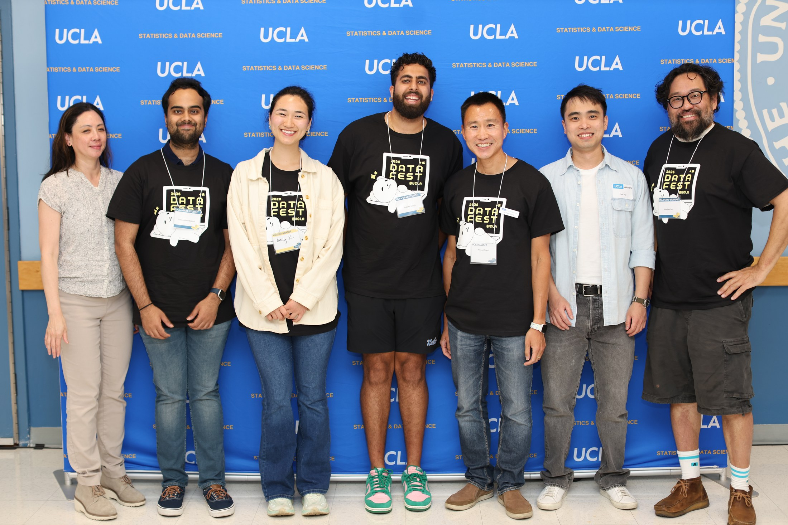

Culture
Proud Punjabi-American
My background keeps me grounded, family-oriented, and connected to a culture built on resilience, hospitality, and community.
About Me
I am completing an M.S. in Applied Statistics and Data Science at UCLA after earning my B.S. in Statistics and Data Science. My work combines Python, R, SQL, Tableau, and statistical modeling to answer practical questions from complex data.
I am looking for opportunities in Data Science, AI Engineering, ML Engineering, analytics, and related fields where I can build data pipelines, evaluate models, communicate insights, and help teams make better product and business decisions.
Culture
My background keeps me grounded, family-oriented, and connected to a culture built on resilience, hospitality, and community.
Competition
I play basketball in my free time and played volleyball from sophomore through senior year of high school, serving as captain during my sophomore and senior seasons.
Sports
I ride with the Sacramento Kings and San Francisco 49ers, which has taught me equal parts loyalty, patience, and high-pressure optimism.
Food
I love exploring new restaurants and cuisines, especially Indian, Japanese, and Hispanic food.
Community
I volunteered with UCLA faculty and MASDS students at ASA DataFest, a 48-hour data analysis competition where undergraduate teams dig into a complex real-world dataset, build insights, and present their findings. Helping students think through data problems reminded me why I enjoy collaborative, practical analytics work.
